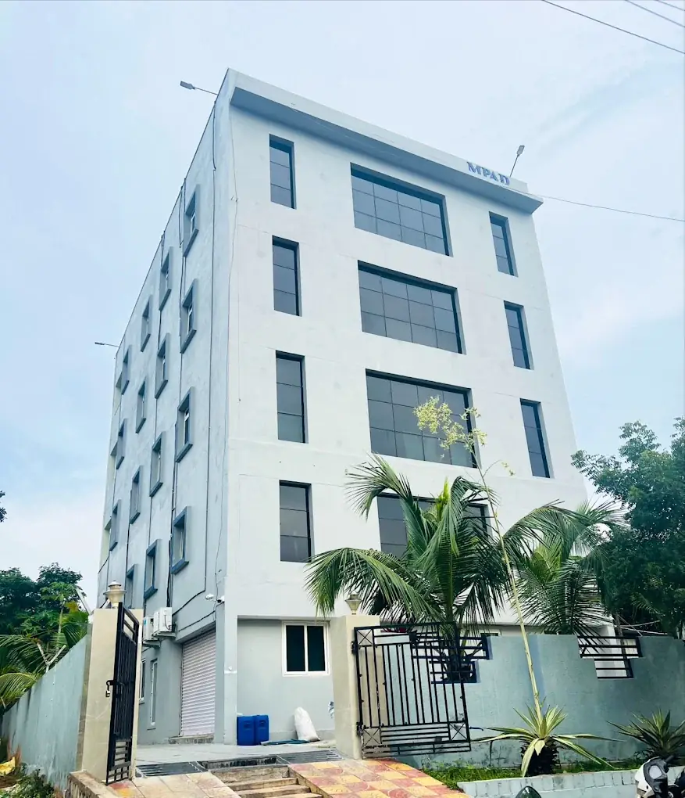

Securing structures through honest, accurate testing since 2016
MPAD QC Lab Private Limited is an NABL-accredited civil engineering quality control laboratory based at Hardware Park, Shamshabad, Hyderabad. We help builders, consultants, contractors and government agencies make safe, informed decisions with reliable test data.

Who we are
MPAD QC Lab was founded with a simple aim: give the construction industry test results it can trust. Today our engineers and technicians handle the complete chain of quality control, from drilling boreholes and running field tests to laboratory testing and engineering reports.
Our laboratory is accredited by NABL to ISO/IEC 17025:2017 (certificate TC-10775). Our clients range from infrastructure majors and global technology campuses to leading Hyderabad developers and government institutions.
Our mission
To provide accurate, timely and impartial testing that ensures structural safety, material quality and regulatory compliance for every project we touch.
Our vision
To be the most trusted civil engineering quality control laboratory in South India, recognised for technical excellence and integrity.
Milestones
- 2016
MPAD QC Lab founded in Hyderabad to bring dependable quality control to construction.
- 2018
NABL accreditation achieved under ISO/IEC 17025.
- 2020
Expanded into geotechnical investigation with our own drilling rigs.
- 2026
Accreditation renewed (certificate TC-10775); testing for 500+ projects.
What we stand for
Integrity
Results are reported exactly as tested, without exception.
Accuracy
Calibrated equipment, trained staff and documented methods.
Responsiveness
Clear timelines and priority options when your schedule is tight.
Partnership
We explain results and help you take the next step.
17025:2017
An NABL-accredited laboratory: results you can submit with confidence
Accredited by the National Accreditation Board for Testing and Calibration Laboratories, India's apex accreditation body and a signatory to the ILAC and APAC mutual recognition arrangements.
- Certificate TC-10775
- Issued 01/07/2026
- Valid until 30/06/2030
- Field Testing
Planning a project or stuck on an approval?
Tell us what you're building and what you need to prove. We'll recommend the right tests, give you a clear quotation and schedule the work.